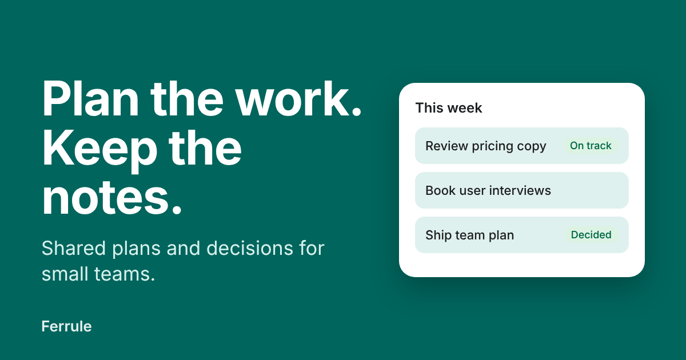

参考网站 · 第一入口
Ferrule 官网与博客
一个虚构产品的首页、博客、文章、联系表单与隐私页，由技能的网站模式、CSS 与少量脚本构成。可以直接看导航、页脚、文章排版和表单在手机与桌面上的表现。
Apple-Style 技能组 · 演示
参考网站是一个完整的小型官网与博客，展示网站模式落在真实页面上的样子。组件工作台逐个检查技能本体的组件、材质与无障碍设置。两者都是静态页面，无需构建。

参考网站 · 第一入口
一个虚构产品的首页、博客、文章、联系表单与隐私页，由技能的网站模式、CSS 与少量脚本构成。可以直接看导航、页脚、文章排版和表单在手机与桌面上的表现。